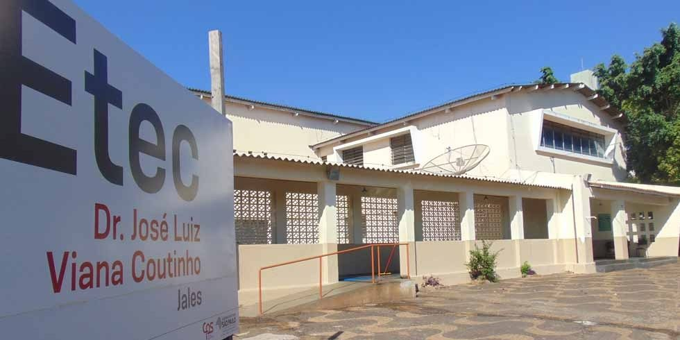
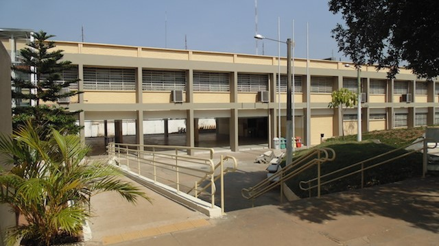

Sobre
Olá! Me chamo Bruno Aparecido Santos Goes, tenho 18 anos e sou apaixonado por tecnologia. Desde criança me encantava entender como funcionavam os aparelhos eletrônicos, o que despertou meu interesse por programação e sistemas.
Minha trajetória educacional reflete esse entusiasmo. Sempre busquei aprender mais e desenvolver minhas habilidades tanto técnicas quanto interpessoais.
Linha do tempo da minha formação
- 2022: Início do curso técnico integrado com ensino médio em Desenvolvimento de Sistemas - ETEC Jales
- 2023: Início do curso técnico em Administração (noturno) - ETEC Jales
- 2024: Conclusão do curso de ADM (junho) e DS (dezembro)
- 2025: Cursando Sistemas para Internet - FATEC Jales
Soft Skills
- Curiosidade constante
- Trabalho em equipe
- Atenção aos detalhes
- Vontade de evoluir
Hobbies
- Jogar videogame
- Tocar teclado
- Jogar futebol
Objetivos profissionais
Meu objetivo é me tornar um desenvolvedor web full stack, contribuindo com soluções inovadoras, bem documentadas e acessíveis. Quero trabalhar em projetos que envolvam tanto o front-end quanto o back-end, além de participar ativamente de equipes ágeis e colaborativas.
Imagens
 Hard Skills
- HTML5, CSS3, JavaScript (DOM, ES6+)
- Java com Servlets e JSP
- PostgresSQL (modelagem, consultas)
- Estruturação de projetos e MVC
Próximos Passos
Além de continuar os estudos na FATEC, pretendo buscar oportunidades de estágio na área de desenvolvimento web ou sistemas, aprimorar meus conhecimentos em frameworks como Spring Boot, React e Bootstrap, e participar de projetos open source para ganhar experiência real no mercado.